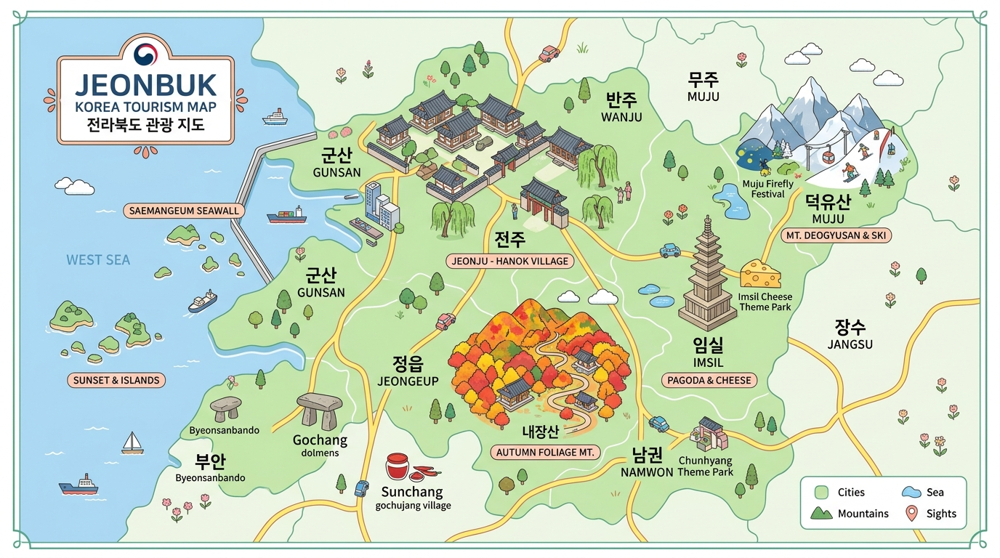

아름다운 전북 관광 일러스트 지도 위 핀을 클릭하여 지역별 정보를 둘러보세요.

기간과 관심 테마를 선택하면 현재 등록된 관광지를 바탕으로 일정 초안을 만들어드립니다.
조건을 선택하고 일정 만들기를 눌러보세요.
어디로 떠날지 고민된다면 전북 여행 전격 가이드 코스를 따라가보세요.
위치 정보
관광지 설명 내용이 들어갑니다.
운영시간·휴무일·요금은 변동될 수 있으니 방문 전 확인해주세요.
개발·테스트용 설정입니다. 공개 서비스에서는 서버를 통한 안전한 연동이 필요합니다.